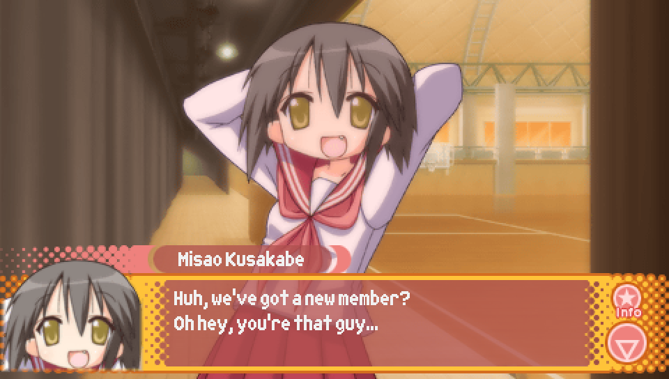
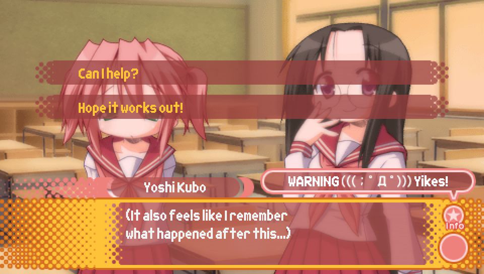
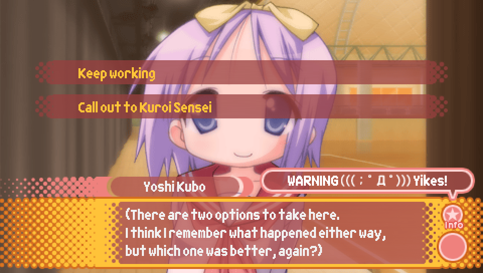
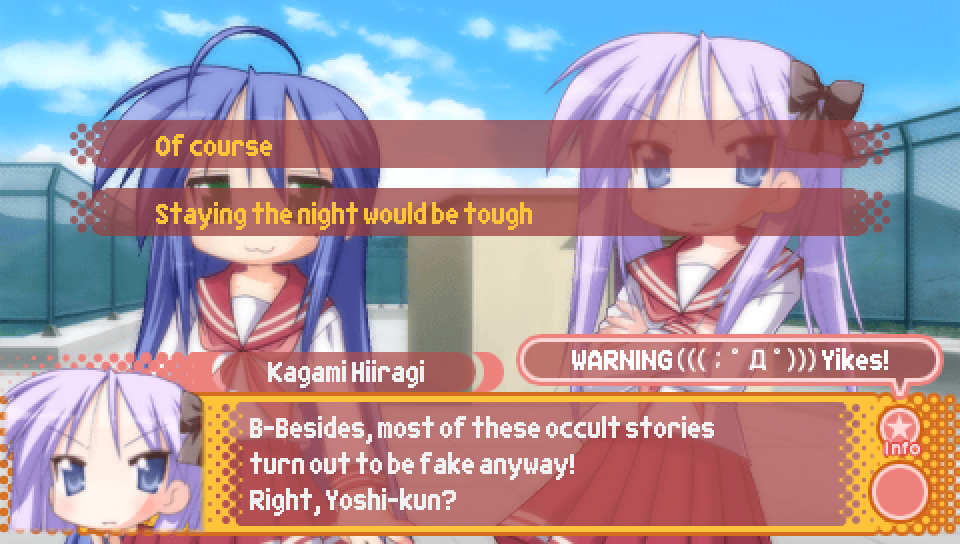
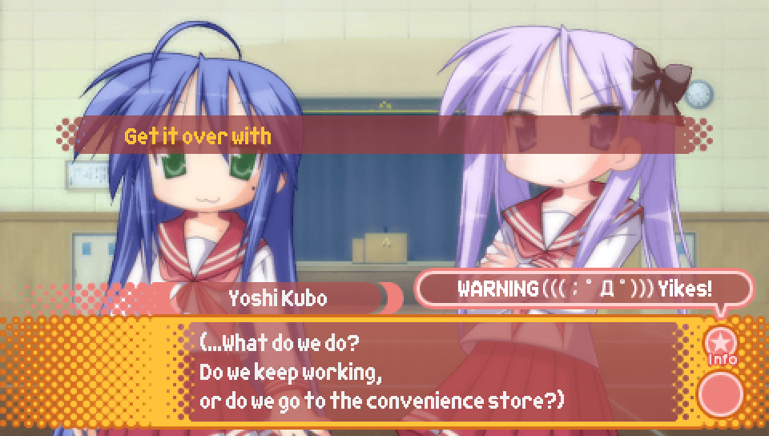
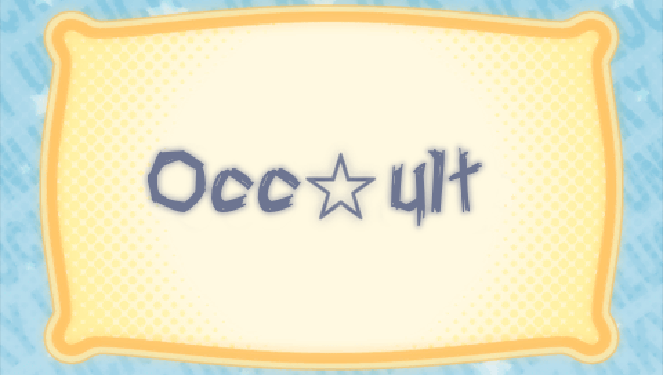

Episode 4: The Girls (and Boy) Who Leapt Through Time |
Route Guide -- Episode 0 (Episode 4 Version) |
|
NOTE: As with the previous guides for Episode 0, if a choice that's present in this Episode is not
mentioned here, it's either because it has no impact on anything, or because the same choice
appeared in previous episode(s), and so has the same impact on things like character favorability
that it did in those previous episode(s).
|

- Because I've become a psychic!? -- no effect
- A conspiracy by a mysterious organization!? -- no effect
- My imagination -- Run into Ayano and Misao + set the Ayano Lucky Lucky Memorial flag
(see Episode 3 guide for details)
Additionally, if you choose "My imagination" so the protagonist runs into Ayano and Misao on the way to school,
they will recognize him when they are properly introduced during play practice on the second day.

|

- Can I help? -- replay Episode 3
- Hope it works out! -- continue with Episode 0
|

- Keep working -- replay Episode 1
- Call out to Kuroi Sensei -- continue with Episode 0
|

- It's just a prank -- continue with Episode 0
- Let's look for the culprits! -- replay Episode 2
|

- Check out the store -- buy trading cards with the Episode 0 distribution
- Forget about it -- don't buy trading cards
Note that by seeing this choice, you unlock the ability to go to the Trading Card Shop in Episode 1.
Additionally, as a reminder, the trading card distribution for Episode 0
is that each of the 40 trading cards have a 2.5% chance of appearing (see the Episode 2 guide for more details).
|

- Of course -- stay later after school
- Forget about it -- don't stay as late after school
If you choose "of course", then the following scene of everyone being at school
late at night will be different than it was in Episode 2's and Episode 3's versions of Episode 0.
In this version, Kagami will suggest going to the convenience store for a snack break,
after which they will continue working.
If you choose "forget about it", the following scene of everyone being at school
late at night will play out the same as in Episode 2's and Episode 3's versions of Episode 0,
in which Kagami will suggest going to the convenience store on the way home from school
once they are done working.
Though Episode 4 proper is not available in this version of the patch,
picking "of course" is necessary in order to make progress towards Episode 4,
as it's only in that version of the following scene where the option to enter Episode 4
will end up appearing.
|

Normally, it is at this choice where you are given the option to enter Episode 4 proper,
but that option is currently removed from the English patch as it is not complete yet.
Once the Episode 4 patch is released, come back here in order to continue the main story.
|

This Unlucky★Sisters segment is only viewable at this point in the game.
Once you have gotten the good ending for Episode 4 at least once, this segment will no longer be viewable
on your current save file, so make sure you don't miss it!
After this segment is over, the rest of Episode 0 plays out the same as in Episode 2 and Episode 3's version.
|
|
With that, we've reached the end of the Episode 3 patch! Thanks for playing!
If you still haven't seen everything in Lucky Star Universe, or haven't played
Ayano's and Misao's Lucky Lucky Memorial Routes, please refer to the Episode 3 guide for details.
Stay tuned for the Episode 4 patch!
|
|